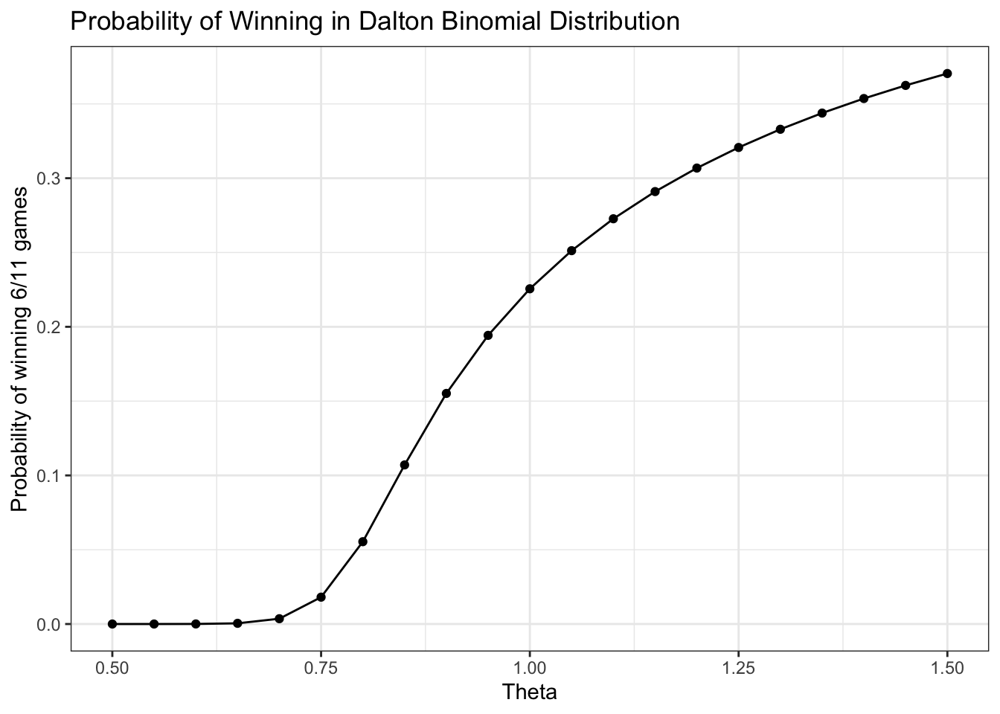
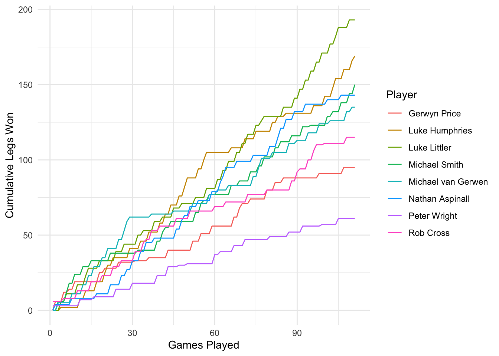
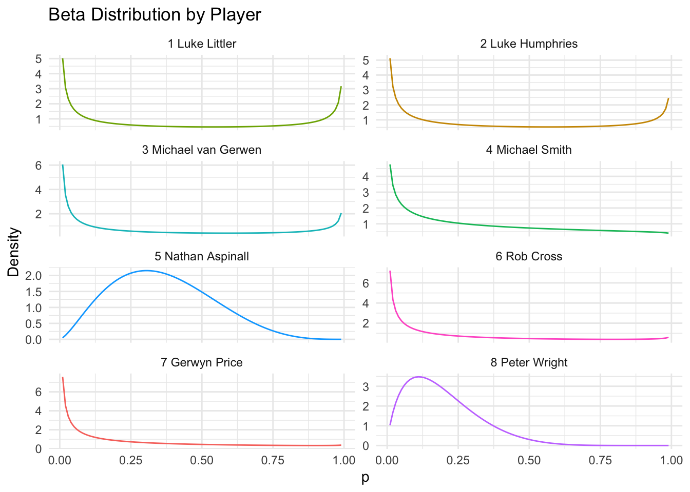

Complete the tasks below. Make sure to start your solutions in on a new line that starts with “Solution:”.
Make sure to use the Quarto Cheatsheet. This will make completing and writing up the lab much easier.
Make sure to use “enter” to make your code readable, so it doesn’t run off the page. I switched the Quarto document to automatically render to .pdf, so you can see what you’re submitting by default. You can switch back for the highlighting by moving the html block above the pdf block in the YAML header.
Don’t forget that you can copy-and-paste code when you’re doing something similar as we did in class!
Make sure to plot all computed probabilities. This is good ggplot practice AND will help make sure you don’t make a mistake when computing the probability.
1 Lab 8 Notes
1.1 Altham’s Multiplicative Binomial Distribution
The PMF for Altham’s Multiplicative Binomial Distribution is \[f_X(x) = \frac{1}{c} {n \choose x} p^x (1-p)^{n-x} \theta^{x(n-x)}I(x \in \{0, 1, ..., n\})\] where \[c = \sum_{i=0}^n {n \choose i} p^i (1-p)^{n-i} \theta^{i(n-i)}.\] Just so we start on the same page, I have included my R function for computing probability using this distribution.
2 Altham’s Multiplicative Beta Binomial Distribution
The PMF for Altham’s Multiplicative Beta Binomial Distribution is \[f_X(x) = \left[\int_{0}^1 \left(\frac{1}{c} {n \choose x} p^x (1-p)^{n-x} \theta^{x(n-x)}\right)\left(\frac{\Gamma(\alpha+\beta)}{\Gamma(\alpha)\Gamma(\beta)} p^{\alpha-1}(1-p)^{\beta-1}\right) dp\right]I(x \in \{0, 1, ..., n\})\]
Just so we start on the same page, I have included my R function for computing probability using this distribution.
Code
daltbbinom.single <-function(x, size, alpha, beta, theta) { integrand <-function(p) {sapply( p, # integrate will pass in a vector, so we use sapply to apply the followingfunction(p_val) {# f(x|p) * f(p|alpha, beta)daltbinom(x, size, p_val, theta) *dbeta(p_val, alpha, beta) } ) }# Probability Mass at x=x# integrate(integrand, lower = 0, upper = 1)$value * (x>=0)*(x<=size)# I shrink the bounds below to avoid log(0)=-infinty# I use try() to catch when there is an error and avoid crashing res <-try(integrate(integrand, lower =1e-7, upper =1-1e-7)$value * (x >=0) * (x <= size),silent =TRUE )# If there is an error, return a near-zero probabilityif (inherits(res, "try-error")) {return(0.1^6) } res}# Write a function that works on a vectordaltbbinom <-function(x, size, alpha, beta, theta) {sapply(X = x,FUN = daltbbinom.single,size = size,alpha = alpha,beta = beta,theta = theta )}
3 Question 1
In Lab 8, we use Altham’s Multiplicative Binomial Distribution. Your job was to interpret the impact of \(\theta\) in that equation. In this lab, we will model the number of legs won in a best of eleven (first to six) match.
To help us think about the interpretation, something that was challenging before, let’s try something a little more manageable.
3.1 Part a
Suppose a player has a 50% chance of winning a specific leg, that is let \(p=0.50\). Let’s look at the probability they win (\(x=6\)) legs in the match. Compute this probability over a sequence from \(\theta=0.5\) to \(\theta=1.5\) and plot it using a line where the \(x\)-axis is \(\theta\) and the \(y\)-axis is \(P(X=6)\).
Solution
Code
# Create the vector of probabilities for each theta. We use a function to essentially "vectorize" the daltbinom function (now I am wondering if it was already vectorized for theta).prob =function(t) {daltbinom(x =6, size =11, prob =0.5, theta = t)}thetas =seq(from =0.5, to =1.5, by =0.05 )probs =sapply(thetas, prob)data =tibble(thetas,probs)
Code
#Plot the probability vs thetaggplot(data) +# Specify Datageom_point(aes(x = thetas, # Specify x-axisy = probs)) +# Specify y-axisgeom_line(aes(x = thetas, # Specify x-axisy = probs), # Specify y-axismethod ="lm", # Specify best fit linecolor ="black") +# Specify line colortheme_bw() +# A cleaner themelabs(x ="Theta", # Specify axis labelsy ="Probability of winning 6/11 games") +ggtitle("Probability of Winning in Dalton Binomial Distribution") # Plot title

3.2 Part b
Now, plot Altham’s Multiplicative Binomial Distribution under the same parameters with \(\theta=0.50\), \(\theta=1\), and \(\theta=1.5\). Use ncol=1 in facet_wrap() to plot the PMFs in a single column for comparing.
What is your best assessment of what \(\theta\) is doing in this setting. Consider when a 6-0 blowout is most likely, and when a 5-6 nail-biter is most likely. Note here we should treat the match as a fixed \(n=11\) as we did for \(n=3\) in Lab 8. Note: In lab 8, we saw that small \(\theta\) meant wins came in bunches (clumped together), so there were more 2-0 wins in a best of three series.
Solution
Here, we can see that theta is essentially a measure of how extreme the values will be in a distribution. A low theta (\(<1\)) corresponds to an expectation of extreme outcomes, and a high theta (\(>1\)) corrresponds to an expectation of moederate values. Here, this is interpreted as us expecting a close match, with both players winning a similar amount of games, when theta is low. Similarly, we expect blowouts when theta is high. When theta is moderate, we expect close-ish games, but accept that there will be some blowouts. I think that theta \(\approx 1\) is the most appropriate for this situation.
4 Question 2
4.1 Part a
Altham’s Multiplicative Binomial Distribution does not typically simplify to the clean \(E(X)=np\) seen in the Binomial distribution, unless \(\theta = 1\). Write out the expression that would need to be solved to find \(E(X^k)\), and then write a function that computes it given the proposed parameter values \(p\) (prob) and \(\theta\) (theta).
Solution
We have the formula for the \(k^{th}\) moment: \[
E(X) = \sum_{x= -\infty}^{\infty}xf_x(x)
\]
which we can compute here:
Code
# Note that our PMF is 0 outside the range 0,11, so instead of computing over the integers we just use the integers in [0,11]. Exk =function(k, size, prob, theta){ x =0:size fx =daltbinom(x = x, size = size, prob = prob, theta = theta)return(sum(x^k*fx))}Exk(1, 11, 0.5, 1)
[1] 5.5
Code
n =11p =0.5(n*p)
[1] 5.5
Code
# Our expected value of the altham binomial matches that of the binomial for theta = 1. # This makes sense, as the Altham distribution for theta = 1 is the binomial distribution.
4.2 Part b
Describe how you can use your answer to part a to find Method of Moments estimates for the parameters \(p\) and \(\theta\) for Altham’s Multiplicative Binomial Distribution based on data.
Solution
From a dataset, we can obtain a first and second moment. We set the formula for the \(1st\) moment (which is a function that takes arguments theta and p) equal to our observed value from the dataset. We do the same for the second moment. We now have two equations and two unknowns, and can use row reduction to solve for the two unknowns.
4.3 Part c
Write a function that computes the log-likelihood for Altham’s Multiplicative Binomial Distribution, given data (x) and proposed parameter values \(p\) (prob) and \(\theta\) (theta).
Solution
Code
# Let's assume x is a dataframe or tibble with columns event # and success. # # We could easily find n from the length of the "event" column vector, so we will write our function for arbitrary n# Let's create an arbitrary x vector to test:loglik =function(x, size, p, theta){ results =daltbinom(x = x, size = size, prob = p, theta = theta) lik = base::log(results)return(sum(lik)) }# Example scenariox =c(1,1,2,4,5,6,11,4,3,5,9,8,9,3,8,4,8,3,11,10,10,10,1,1,1,2,2,4,7,9,0,0,9,7,4)loglik(x = x, size =11, p =0.5, theta =1)
[1] -129.9912
4.4 Part d
Describe how you can use your answer to part c to find Maximum Likelihood estimates for the parameters \(p\) and \(\theta\) for Altham’s Multiplicative Binomial Distribution based on data.
Solution
We would use use calculus (via the optim function) to optimize theta and p for the highest (least negative) value of the log-likelihood function. We could plot result this using a color gradient, as we did in class.
5 Lab 10
Peter “Snakebite” Wright is a two-time Professional Darts Corporation World Champion (2020, 2022) and a former World No. 1. He is one of the sport’s most decorated players, winning nearly 50 PDC titles including the World Matchplay, UK Open, and multiple European Championships.
In 2024, he made The Premier League – a league involving the eight best players that runs every Thursday night from February to May. In this season, he won two of eighteen matches, securing only four points. The spread in legs won was -43, meaning he lost 43 more legs than he won. This performance was rather quite bad. He was soundly trounced in almost all his match ups.
The 2024 standings are below:
Rank
Player
1
Luke Littler
2
Luke Humphries
3
Michael van Gerwen
4
Michael Smith
5
Nathan Aspinall
6
Rob Cross
7
Gerwyn Price
8
Peter Wright
5.1 Summarize the 2024 Data
In pdc2024.csv, I have provided the data for the 2024 Premier League season. There are a few data cleaning steps to consider.
Remove any matches with no Score (e.g., a bye or walkover)
Nights 1 through 16 are best of 11 (first to 6), but the playoffs are extended. For consistency, keep nights 1 through 16 only.
Make two columns WinnerLegs and LoserLegs that keep track of the number of legs each player has won
Summarize the data. What do the data tell us about the breakdown of the results?
Solution
Code
# data cleaning:dat.pdc =read_csv("pdc2024.csv")dat.pdc =tibble(dat.pdc) |>filter(Score !="w/o") |>filter(Night !="Finals") |>mutate(Matchnum =row_number()) |>separate(Score, into =c("WinnerLegs", "LoserLegs"), sep ="-", convert =TRUE)
dat.pdc |>pivot_longer(any_of(players), names_to ="Player", values_to ="CumLegs") |>filter(!is.na(CumLegs)) |>ggplot(aes(x = MatchID, y = CumLegs, color = Player)) +geom_line() +labs(x ="Games Played", y ="Cumulative Legs Won", color ="Player") +theme_minimal()#I had to look up a lot of functions to make this plot and the data manipulation possible. If there is an easier solution I would be very interested to see it, but I tried to do it simply for a while and couldn't find anything super elegant.
Figure 1: Cumulative Legs Won Throughout the 2024 Season by Player

From this plot, the way that the season evolved, for each player and as a league, is clear. Some notable trends are:
Luke Littler’s surge in the last quarter of the season
Peter Wright’s consistently poor performance
The mid-season reign of Luke Humphries
After the first 30 games, there were only three leaders, two of which finished first and second. Michael van Gerwen had a short stint of domination in the early season, but faded to a mediocre finish by the end.
5.2 Altham’s Multiplicative Binomial Distribution
For each player in the 2024 season, use the number of legs won in each match to compute maximium likelihood estimates for \(p\) and \(\theta\). Note: The “for each” here can be done more efficiently with a function or a loop!
Create a vector containing the number of legs won by the player. Note sometimes you will need to pull from winner’s legs and sometimes from the loser’s legs.
Find the MLE for the player using this data. Ensure to report \(p\) and \(\theta\) for each player in a nicely formatted table. Note: In Lecture on Monday, we used transformations to restrict how optim() searches the parameter space. For example, here, you might consider p <- 1/(1+exp(-par[1])) and theta <- exp(par[2]).
Make comments about the MLEs in the context of the standings.
Solution
Code
legs =function(player) { dat.pdc |>filter(Winner == player | Loser == player) |>mutate(LegsWon =case_when( Winner == player ~ WinnerLegs, Loser == player ~ LoserLegs ) ) |>select(MatchID, LegsWon) |>rename(!!paste0(player, "_dist") := LegsWon)}#paste0 so there are no spaces, needed to distinguish these columns from cumulative columnslegs_data =map(players, legs) |>reduce(full_join, by ="MatchID")dat.pdc = dat.pdc |>left_join(legs_data, by ="MatchID")
Code
altham_mle =function(player) { y = dat.pdc |>filter(!is.na(!!sym(paste0(player, "_dist")))) |>pull(!!sym(paste0(player, "_dist"))) nll =function(par) { p =1/ (1+exp(-par[1])) theta =exp(par[2])-loglik(x = y, size =11, p = p, theta = theta) } fit =optim(c(0, 0), nll)tibble(Player = player,p =1/ (1+exp(-fit$par[1])),theta =exp(fit$par[2]) )}rank_order =tibble(Player =c("Luke Littler", "Luke Humphries", "Michael van Gerwen", "Michael Smith", "Nathan Aspinall", "Rob Cross","Gerwyn Price", "Peter Wright"),Rank =1:8)mle_table =map(players, altham_mle) |>list_rbind() |>left_join(rank_order, by ="Player") |>arrange(Rank) |>select(Rank, Player, p, theta)
Code
knitr::kable(mle_table, digits =3,caption ="MLE Estimates for Altham's Multiplicative Binomial Distribution")
Table 1: MLE Estimates for Altham’s Multiplicative Binomial Distribution
Rank
Player
p
theta
1
Luke Littler
0.469
1.316
2
Luke Humphries
0.461
1.205
3
Michael van Gerwen
0.431
1.023
4
Michael Smith
0.426
1.047
5
Nathan Aspinall
0.403
1.186
6
Rob Cross
0.395
1.014
7
Gerwyn Price
0.383
1.020
8
Peter Wright
0.317
0.989
We get a result that corroborates what we know about distributions and darts. The table, when ranked in order of final standings, is also ranked from highest p (of winning one leg) to lowest. This means that the players with the highest probabilities of winning a leg, have won the most matches. This isn’t necessarily surprising (actually, it would be cool to run an analysis to see how suprising it actually is under these conditions), but it also isn’t guaranteed. We also see a (less solid) positive correlation with theta and final standings. This is interesting, and makes sense- winning more legs closer to each other means that you’re not spreading out your legs won between matches, you’re winning 6 instead of 5 times, for example. In theory, we could have a player who won 5 games each match, which would have broken the pattern we see here.
5.3 Altham’s Multiplicative Beta Binomial Distribution
For each player in the 2024 season, use the number of legs won in each match to compute maxmium likelihood estimates for \(p\) and \(\theta\). Note: The “for each” here can be done more efficiently with a function or a loop!
Create a vector containing the number of legs won by the player. Note sometimes you will need to pull from winner’s legs and sometimes from the loser’s legs.
Find the MLEs for the player using this data. Ensure to report \(\alpha\), \(\beta\), and \(\theta\) for each player in a nicely formatted table. Note 1: Due to the computational complexity of integrate(), you should compute the logged probability for 0:6 once and add them according to the data in each player’s vector. Note 2: In Lecture on Monday, we used transformations to restrict how optim() searches the parameter space.
Plot the underlying Beta(\(\alpha\), \(\beta\)) distribution for each player. Note: Add the mean and variance of the Beta to the table of MLEs. Recall \[\begin{align*}
E(X) &= \frac{\alpha}{\alpha+\beta}\\
sd(X) &= \sqrt{\frac{\alpha\beta}{(\alpha+\beta)^2(\alpha+\beta+1)}}
\end{align*}\]
Make comments about the MLEs in the context of the standings. Note: The players alternate who throws first in a leg has the mathematical “head start” to reach a finish before their opponent can take another turn. Players alternate who throws first with each leg.
Table 2: MLE Estimates for Altham’s Multiplicative Beta Binomial Distribution
Rank
Player
alpha
beta
theta
Mean
SD
1
Luke Littler
0.283
0.384
10.797
0.425
0.383
2
Luke Humphries
0.331
0.490
6.391
0.403
0.363
3
Michael van Gerwen
0.219
0.454
5.001
0.325
0.362
4
Michael Smith
0.534
1.068
2.245
0.334
0.292
5
Nathan Aspinall
2.468
4.338
1.492
0.363
0.172
6
Rob Cross
0.268
0.813
3.202
0.248
0.299
7
Gerwyn Price
0.264
0.917
3.175
0.224
0.282
8
Peter Wright
1.786
7.289
1.214
0.197
0.125
Code
altbb_table |>rowwise() |>mutate(x =list(seq(0.01, 0.99, by =0.01)),density =list(dbeta(seq(0.01, 0.99, by =0.01), alpha, beta))) |>unnest(c(x, density)) |>ggplot(aes(x = x, y = density, color = Player)) +geom_line() +facet_wrap(~paste(Rank, Player), ncol =2, scales ="free_y") +labs(x ="p", y ="Density", title ="Beta Distribution by Player") +theme_minimal() +theme(legend.position ="none")
Figure 2: Beta Distributions for Each Player in the 2024 Season

## Executive Summary
Summarize the work you’ve done here to provide a brief (200-300 word) data-driven summary of the 2024 Premier League season using your work in Lab 10. Your summary should be professional, clear, and all claims should be corroborated with statistical support.
Solution
The 2024 Premier League season was a season defined by storylines. The first 15 games saw a tight pack, with the leader in legs won changing several times. By week 30, we entered the peak of Michael van Gerwen’s best performance, which put him firmly ahead of the rest of the field. By week 45, Humphries seperated himself from the other players, with a strong lead until week 75. From then on, Littler increased his lead almost every night, finishing with a ~25 leg margin above second place. The volatility of the standings, as seen in Figure 1, makes it clear that this scenario would not be easy to predict on the player or league level.
Analyzing the MLE estimates for the Altham distributions, we can see that the probability of winning one leg was highly correlated (really, we should test this) to the final standings (Table 1). This makes sense, performing well over cumulative legs won corresponded to a higher final standing. The theta in the non-Beta distribution also indicates that a more stable probability of winning each leg often resulted in more wins over the season (Table 1). The Altham-Beta-Binomial MLE table shows us that most of the top players had higher standard deviations in their odds of winning a single leg than the lower-ranked players. This is interesting, as it suggests a player should work on a better average leg rather than a more consistent good performance.